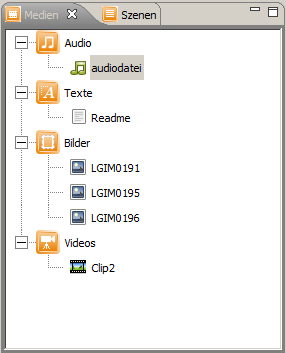
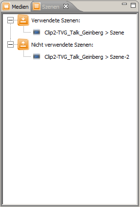
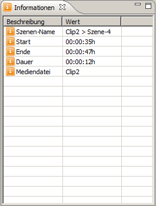

Im SIVA Producer stehen verschiedene Views zur Verfügung. Views dienen der Auflistung und Darstellung
von verschiedenen Elementen. Von einem View aus können Editoren geöffnet werden, Dateien geladen
und gelöscht werden.
Views im SIVA Producer sind:

Das Szenenrepository ist ebenfalls wie eine Ordnerstruktur angeordnet. Die Hauptordner sind
"Verwendete Szenen" und "Nicht verwendete Szenen". Im Szenengraphen nicht verwendete Szenen
sind in der Kategorie "Nicht verwendete Szenen" zu finden. Wird eine Szene mindestens einmal
in den Szenengraphen eingefügt, wird die Szene automatisch in die Kategorie "Verwendete Szenen"
eingeordnet:

Der Informationsbereich ist als Tabelle angeordnet. Je nach markiertem Objekt im Arbeitsbereich werden
verschiedene Informationen mit Beschreibung und Wert angegeben:

Der Übersichtsbereich stellt eine Übersicht des Szenengraphen dar: